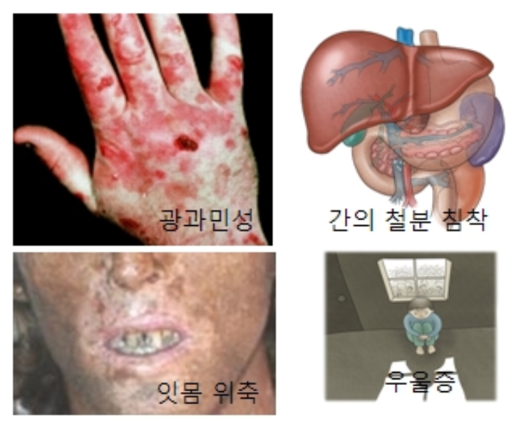

반성 유전
BIOBYTE
작성자:11321 김도연
11323 김혜민
11330 조은세
정의
사람의 성염색체는 X,Y 두 가지가 있으며, 이 두 염색체가 XX로 쌍을 이루면 여성, XY로 쌍을 이루면 남성이 된다. X염색체에 1100개 정도의 유전자가 있고, Y염색체에는 그보다 훨씬 적은 수의 유전자가 있다.반성 유전이란 유전자가 X염색체에 있어, 남녀에 따라 형질이 나타나는 비율이 다른 유전 현상을 뜻한다.
원리
X연관 우성 유전:X염색체에 존재하는 우성대립유전자의 유전 양상을 뜻한다. 이러한 유전자를 지닌 어머니는 모든 자손에게 50% 확률로 이를 물려준다. 해당 유전자가 우성이기 때문에 물려받은 개체는 모두 해당 표현형을 나타낸다. (해당 유전자가 질병일 경우)아빠에게서 물려받는 경우, 딸은 환자가 될 확률이 100%이고 아들은 아빠로부터 X가 아닌 Y만 물려받으므로 환자일 가능성이 0%가 된다. 알포트증후군, 색소실조증 등이 X연관 우성 형질의 예시에 해당된다.
X연관 열성 유전:
X염색체에 존재하는 대립유전자의 유전 양상을 뜻한다. 이 세 종류 중 가장 흔하다.
만약 이상 유전자가 있는 성염색체를 X`라고 표현하면, XX 성염색체 구성을 지닌 여성은 XX, XX`, X`X` 이렇게 총 세가지의 경우가 있다. XX` 염색체 구성을 지닌 여성은 형질이 발현하지 않고 이상 유전자를 지니고 있기만 해서 보인자라 불린다. XX의 경우는 일반적인 성염색체를 가진것이고, X`X`의 경우에는 여성도 형질이 발현한다(다만, 높은 확률로 사산한다).
한편, 남성의 경우 XY 염색체 구성을 지닌다. 그러므로 XY와 X`Y 두가지 경우가 있다. Y염색체는 X염색체와 다르고, 지닌 유전자수도 적어 X염색체에 영향을 끼치지 못한다. 그래서 남자의 경우 X`염색체를 지니면 무조건적으로 형질이 발현한다. (그래서 보인자가 없다.)
Y연관 유전:
Y염색체에 존재하는 유전자가 나타내는 유전 양상을 의미한다. Y염색체에 있는 유전자 수가 적기 때문에, 이러한 유전은 자주 발생하지 않는다. Y염색체는 남성만 지니기 때문에, 이 유전자도 남성에게만 표현되어야 한다. 그 남성의 자손 중 여성에게 발현되지도 않고, 그 여성의 자손들에게도 발현되지 않는다. SRY 유전자가 이에 해당된다.
반성 유전의 예시
색맹유전:색맹 유전인자는 열성으로 전달되며 유전인자가 성염색체 중 X염색체에 있는 반성유전이다. 따라서 여자보다는 남자에게서 더 많이 나타난다.
색맹은 부분 색맹과 전색맹으로 구분된다. 부분색맹은 적색과 녹색을 구분하지 못하는 적록색맹, 황색과 청색을 구분하지 못하는 황청색맹 등이 있다. 전색맹은 전체 색을 구분하지 못하는 사람인데 거의 드물다.
특징:
- 어머니가 색맹이면 아들도 색맹이다→ 아들의 X염색체는 어머니로부터 물려받은 것이다. 어머니가 색맹일 경우(X'X'), 아들은 100%의 확률로 색맹이 된다.(X'Y)
- 아들이 정상이라면 어머니도 정상이다→ 정상인 아들(XY)의 X염색체는 어머니로부터 물려받은 것이다. 적록 색맹은 열성 유전이므로, 어머니가 적록 색맹 대립유전자 하나를 가지고 있는 경우에도, 어머니는 정상이다. (XX, XX')
- 아버지가 정상이라면 딸도 정상이다 → 딸은 부모로부터 X염색체를 하나씩 물려받는다. 아버지가 정상이면 아버지의 정상 대립 유전자(X)가 딸에게 전달되므로, 위에서 설명한 것과 같이 어머니의 색맹 여부에 관계하지 않고 무조건 딸은 정상이 된다. (XX, XX')
- 딸이 색맹이라면 아버지도 색맹이다→ 딸이 색맹이 되려면 부모로부터 색맹대립유전자를 하나씩 물려받아야 한다. 이 경우의 아버지의 색맹 유전자형은 X'Y가 되고, 아버지가 색맹임이 분명해진다.
반성 유전과 관련된 유전병
유전병:- DNA 염기서열에 이상이 발생해 일어나는 질환
- 특정 유전자가 부모에게 물려져 내려와 발병하는 질환
- 유전자에 이상이 있는 유전병의 경우 유전자의 점 돌연변이에 의해 인간 몸의 특정 단백질에 이상이 생겨 유발되는 현상
- X연관 열성 유전에 해당한다.
- 혈액을 응고되지 않는 질환
- x 염색체에 있는 유전자의 유전성, 선천성 돌연변이에 의해 혈액 내 응고 인자의 부족으로 발생하는 출혈성 유전병
- 특성: 정상인의 경우 출혈이 발생하더라도 머지않아 혈액이 응고되어 지혈이 되지만 혈우병 환자는 정상인, 일반인보다 오랫동안 지속적으로 출혈이 일어나 작은 부상만으로도 과다출혈이 일어나 자칫 사망에 이르기까지 한다. 대부분은 선천적으로 발생되지만 후천적으로 혈우병이 가끔씩 발생하기도 한다.
- 이 질환은 남성만 걸리는 경향이 있는데, 그 이유는 X`X` 유전자를 가진 태아는 높은 확률로 사산하기 때문이다. 하지만 드물게 여성 질환자도 존재한다.
- 현실에서 이 혈우병으로 인해 유명세를 얻은 가계도가 있는데, 바로 빅토리아 여왕의 가계도이다. 빅토리아 여왕은 혈우병 보인자였는데, 그녀의 자손은 유럽 왕실의 전통대로 다른 왕실과 결혼을 한다. 이것은 훗날 러시아 황실의 몰락에 간접적인 영향을 끼치는 등, 유럽 왕실 전역에 문제를 일으킨다.
| 혈우병 A형 | 혈우병 B형 | 혈우병 C형 |
|---|---|---|
| 응고인자 Factor VIII(8)의 결핍 |
응고인자 Factor IX(9)의 결핍 |
응고인자 Factor XI(11)의 결핍 |
반성유전이 아닌 한성유전으로 인한 유전병
포르피린증:
- 헴 합성 회로의 효소가 기능하지 않는, 때문에 적혈구가 생성되지 않는 병으로서 주로 백인에게서 나타난다
- 원인: 내의 헤모글로빈의 구성 물질 중 하나인 "헴" 입자 생성 회로에 이상이 생겨 헴 합성 효소에 문제가 생긴다. 헴 입자의 합성에는 관여하는 8가지 효소 중 하나라도 문제가 일어나면 포피리아로 연결된다. 따라서 이를 해결하기 위해서는 정상적인 헤모글로빈을 체내에 투여해야 한다.
- 이 병은 신경계와 내장계에 영향을 끼치는데, 주로 증상으로는 저혈압, 복통, 구토, 팔다리의 통증과 근육의 약화, 감각 소실, 빨갛게 변한 오줌, 빈혈 등이 있다. 가끔가다 우울증 등 정신에 이상이 생기는 경우도 있다.
- 햇빛에 노출되면 피부에 화상을 입고 물집이 생기며 몸에 비정상적으로 털이 많이 자라나며 잇몸의 구조가 변해 이빨이 길어진 것처럼 보이게 된다.
- 포르피린이 과잉생간 되거나 헴의 생성이 일어나지 않아 몸에서 쓰이지 않게 되면 피하에 쌓여 햇빛에 노출이 되면 햇빛과 반응을 일으켜 수포 등의 피부염을 발생시킨다.
참고자료
https://namu.wiki/w/%ED%8F%AC%ED%94%BC%EB%A6%AC%EC%95%84?from=%ED%8F%AC%EB%A5%B4%ED%94%BC%EB%A6%B0%EC%A6%9D https://ko.wikipedia.org/wiki/%ED%8F%AC%EB%A5%B4%ED%94%BC%EB%A6%B0%EC%A6%9D https://namu.wiki/w/%EC%9C%A0%EC%A0%84%EB%B3%91?from=%EB%B0%98%EC%84%B1%EC%9C%A0%EC%A0%84 https://ko.wikipedia.org/wiki/%ED%98%88%EC%9A%B0%EB%B3%91 https://namu.wiki/w/%ED%98%88%EC%9A%B0%EB%B3%91 http://www.amc.seoul.kr/asan/healthinfo/disease/diseaseDetail.do?contentId=32367 https://terms.naver.com/entry.naver?docId=5669786&cid=63057&categoryId=63057#toc4 https://m.blog.naver.com/PostView.naver?isHttpsRedirect=true&blogId=dbok1234&logNo=110169366832